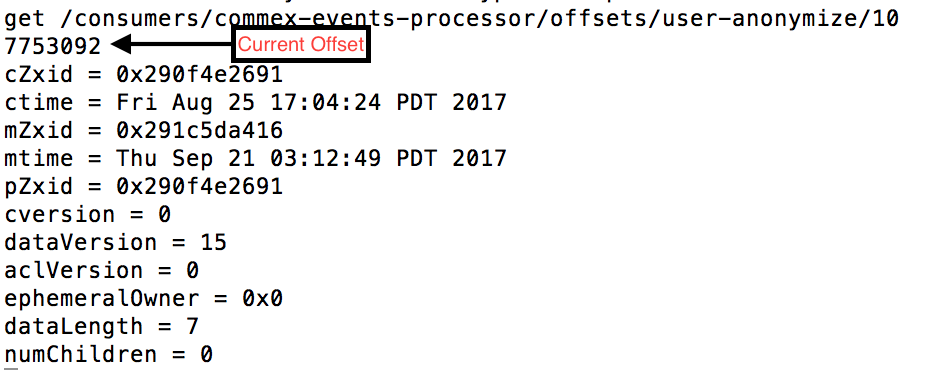

Kafka version 0.9v and above provide the capability to store the topic offsets on the broker directly instead of relying on the Zookeeper.
The decision on whether to store the offset in Kafka or Zookeeper is dependendent on both the Kafka broker version and the version of the client driver. You can refer to the following table for the behavior
Kafka Version / Client Driver Version
Less than 0.9
0.9 or above
Less than 0.9
Offset Storage : Zookeeper
Offset Storage : Zookeeper
0.9 or above
Offset Storage : Zookeeper
Offset Storage : KAFKA
Offset Storage - Zookeeper
Data Model
Zookeeper data more is very similar to a file directory system. Each node can have none or many children. Unlike the file system , Zookeeper
nodes can have data associated with the nodes. These data can range from configuration data, status details , timestamps etc which help Zookeeper
do what it does best.
Each node is called a 'znode' in Zookeeper parlance.
Zookeeper Storage Data Model
For the offsets, the data is stored under the following path :
Format: /consumers/{CONSUMER_GROUP_ID}/offsets/{TOPIC_NAME}/{PARTITION_NUMBER}
Example: /consumers/photo-events-processor/offsets/photos/20
The above path will contain the offset information for the 20th partition associated with
the 'photos' topic for the 'photos-events-processor' consumer group.
Retrieving Offsets From Zookeeper
Step#1 : Connect to Zookeeper Shell
The '.sh' script is located under the /bin folder of the Zookeeper installation.
bash$ ./zookeeper-shell.sh zookeeper1v:2181
Step#2 : Execute the following command to retrieve the offset metadata
get /consumers/photo-events-processor/offsets/photos/20
Output:

Offset Storage - Kafka
Offsets in Kafka are stored as messages in a separate topic named '__consumer_offsets' . Each consumer commits a message into the
topic at periodic intervals. The message contains the metadata related to the current offset, the consumer group , partition number, topic
associated with the offset and other useful information.
Reading Offsets From Kafka
Since __consumer_offsets is a just like any other topic, its possible to consume the message off. Before we do that we need make this topic
visible to the consumers since this is an internal KAFKA topic and is not visible to the consumers by default. In order to make the topic visible, execute
the following command.